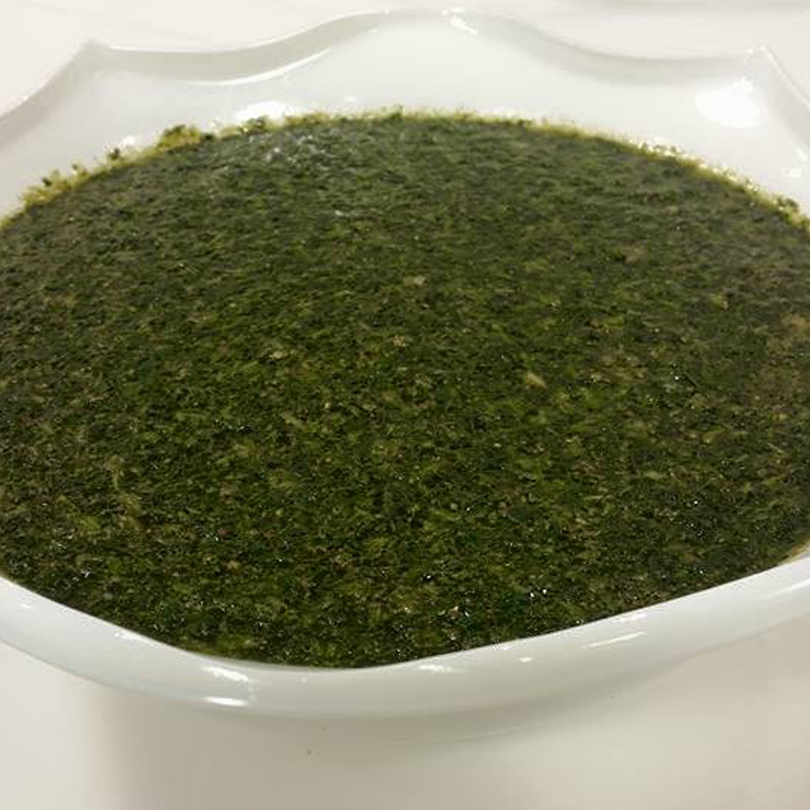

ملوخيه
المقادير
- 1/2 كيلوملوخية (مفرومة بمفرمة الملوخية) او كيس ملوخية مفرومة جاهزة
- شوربة دجاج او لحم
- ملعقة و نصف ثوم مفروم ناعم
- ملعقة و نصف كزبرة ناشفة مطحونة
- 2 ملعقة طعام سمن بلدى(أو أى نوع)
- ملح(حسب الرغبة)
طريقة التحضير
- فى وعاء نضع الملوخية على النار .
- نضع نصف ملعقة ثوم مفروم مع نصف ملعقة كزبرة مطحونة .
- نقوم بوضع الشوربة قليلاً قليلاً و نقلب حتى نحصل على القوام المطلوب (و لا ثقيل و لا خفيف) عدم الفرط فى غلي الملوخية و نرفع الأناء جانباً .
- فى طاسة على النار نضع ملعقتين السمن و الثوم المفروم و نقلب قليلاً .
- نضع الكزبرة على الثوم و نحركة حتى يحمر و نضعة على الملوخية .
صينيه بطاطس بالجبنه
المقادير
- 4 حبة بطاطس
- 4 معلقة كبيرة جبنة كريمي
- 1 معلقة كبيرة ثوم مهروس
- 2 كوب جبنة موزاريلا مبشورة
- 1 كوب حليب
- 1 بيضة
- ملح
- فلفل أسود
طريقة التحضير
- يقشر البطاطس، ويقطع حلقات متوسطة السمك، وتغسل جيداً.
- توضع شرائح البطاطس في البولة، وتتبل بالثوم والملح والفلفل الاسود، وتدعك بها جيداً.
- توضع طبقة من شرائح البطاطس في صينية الفرن، ويوضع فوقها جزء من الجبنة.
- تكرر العملية حتى إنتهاء الكمية وتصبح الصينية عبارة عن طبقة من البطاطس وطبقة من الجبنة وهكذا.
- يسخن الفرن على درجة حرارة 180 مئوية.
- يوضع الحليب في بولة، ويضاف إليه البيض، ويخفق جيداً.
- يضاف إليه رشة فلفل أسود، ويخفق مرة أخرى.
- يصب الخليط فوق البطاطس، مع مراعاة توزيعه بالتساوي على كامل الصينية.
- تغطى الصينية بورق القصدير "فويل"، ويدخل الفرن لمدة 40 دقيقة وحتى تنضج.
- تعرض للهيب الشواية لمدة 3 دقائق وحتى تحمر.
- تخرج من الفرن وتترك لتهدأ قليلاً.
- تقطع، وتقدم ساخنة.
شوربه الكوسه
المقادير
- 4 ملعقة كبيرة زيت زيتون
- 1 ثمرة بصل مقطعة
- 1/2 فلفل هالبينو حار
- 3 فص ثوم مقطع
- 1 كيلو كوسة
- 1 1/2 كوب خبز مقطع
- 3 كوب شوربة دجاج
- 1 كوب ماء
- 1/2 كوب اوراق نعناع
- 1/2 كوب كزبرة مقطعة
- 2 ملعقة صغيرة عصير ليمون
- ملح
- فلفل
طريقة التحضير
- في اناء كبير على نار متوسطة سخني زيت الزيتون.
- ضعي البصل و الهالبينو في الزيت و قلبي لمدة من 4-5 دقائق.
- ضعي الثوم و الكوسة على البصل و قلبي لمدة من 3-4 دقائق ثم اضيفي الملح و قلبي.
- ضعي الحبز المقطع و الشوربة و الماء ثم اخفضي درجة الحرارة و اتركي المزيج لمدة 20 دقيقة.
- ارفعي الإناء من على النار ثم ضعي النعناع و الكزبرة و قلبي.
- ضعي محتويات الشوربة في الخلاط الكهربائي ثم اخلطي المزيج جيدا.
- يضاف إليه رشة فلفل أسود، ويخفق مرة أخرى.
- ضعي الشوربة في بولات التقديم و زينيها بالكزبرة و قدميها ساخنة.